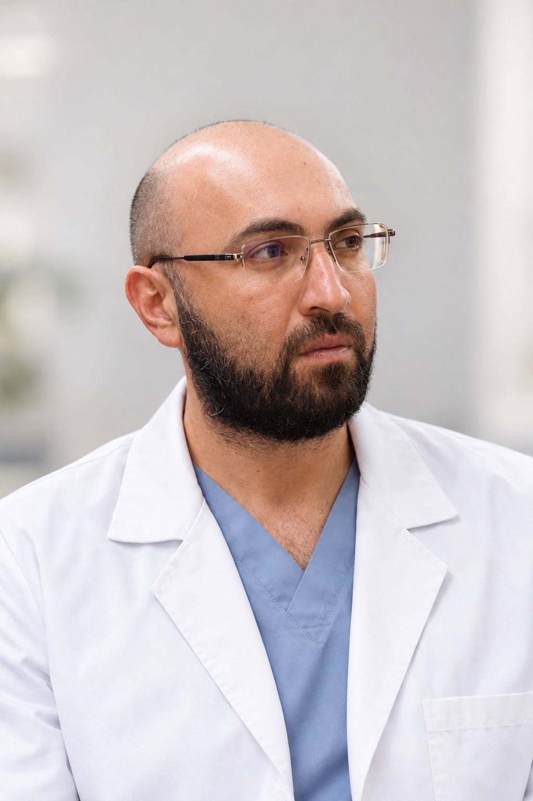
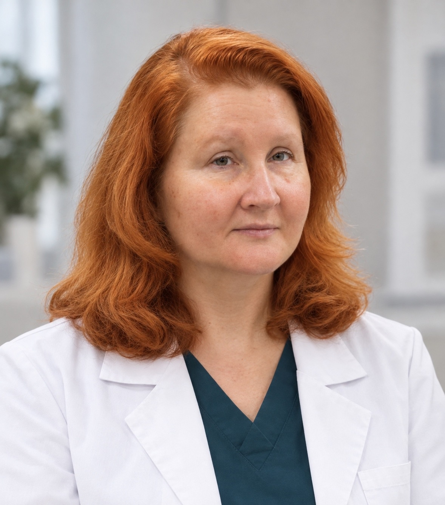
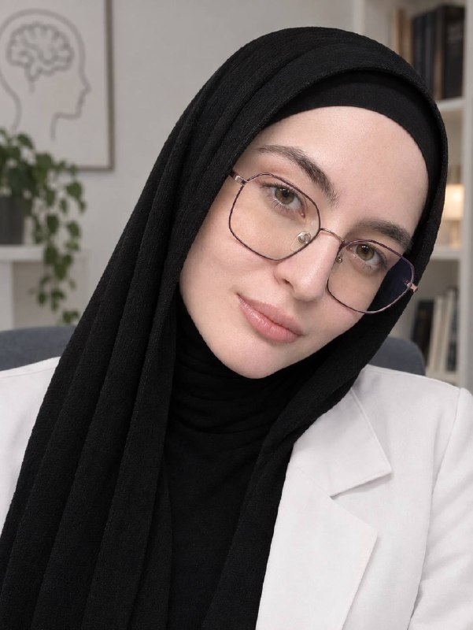

Психологическая помощь
Поддержка ребёнка и семьи, работа с переживаниями, тревогой и сложными ситуациями.
Узнать больше →Место, где ребёнка слышат, понимают и помогают сделать следующий шаг — спокойно и бережно.
Центр ментального здоровья детей — это пространство заботы, поддержки и безопасности, где каждый ребёнок может получить необходимую помощь в комфортной и доброжелательной атмосфере.
Поддержка ребёнка и семьи, работа с переживаниями, тревогой и сложными ситуациями.
Узнать больше →Консультация специалиста и комплексное сопровождение.
Наши специалисты →Помощь в вопросах речи, коммуникации и речевого развития.
Специалисты →Бережная помощь при эмоциональных и поведенческих трудностях.
Как обратиться →Консультация врача и помощь по вопросам зависимого поведения.
Специалист →Формат помощи без круглосуточного пребывания.
Подробнее →Стационарная помощь в условиях круглосуточного наблюдения.
Частые вопросы →Наша команда — это профессионалы с большим опытом работы, которые с вниманием и заботой подходят к каждому ребёнку, помогая ему чувствовать себя в безопасности и уверенно преодолевать трудности.



Здесь будут размещаться короткие видеоролики специалистов: о тревоге, адаптации, общении с ребёнком, кризисах и других важных темах.
Мы сотрудничаем с Национальным медицинским исследовательским центром психиатрии и неврологии имени В. М. Бехтерева, развивая профессиональные связи и обмениваясь опытом в области психического здоровья.
Безопасная среда и работа в команде.
У детей есть пространство, где можно гулять и проводить время на свежем воздухе.
Используется чат-бот для обзвона пациентов и напоминания о приёме.
Основная информация для первого обращения.
По номеру 8 (8662) 49-61-79 или через Портал пациента КБР.
Да. Можно обратиться в регистратуру или по номеру телефона.
Паспорт родителей.